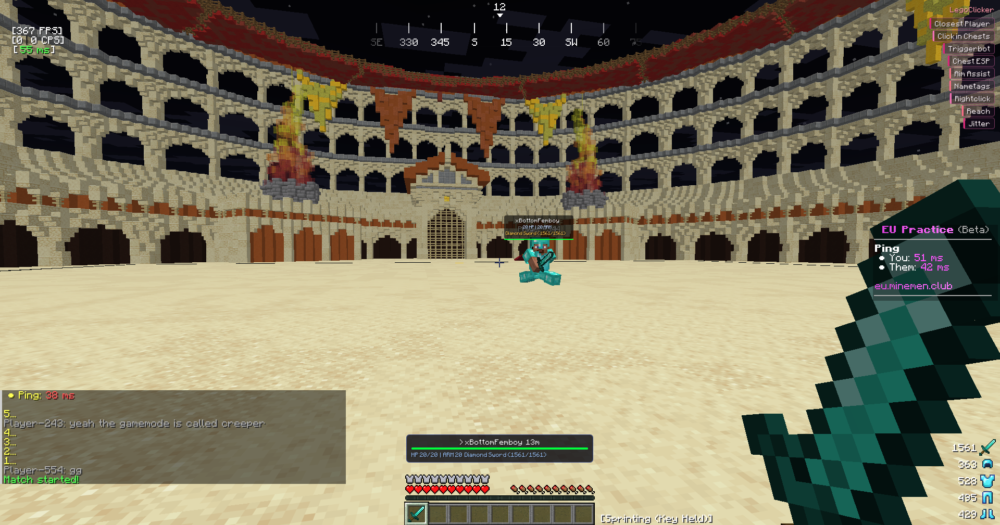
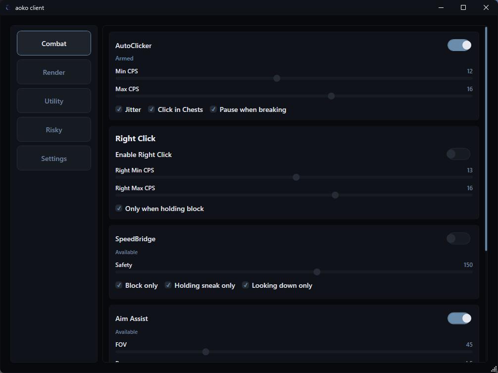
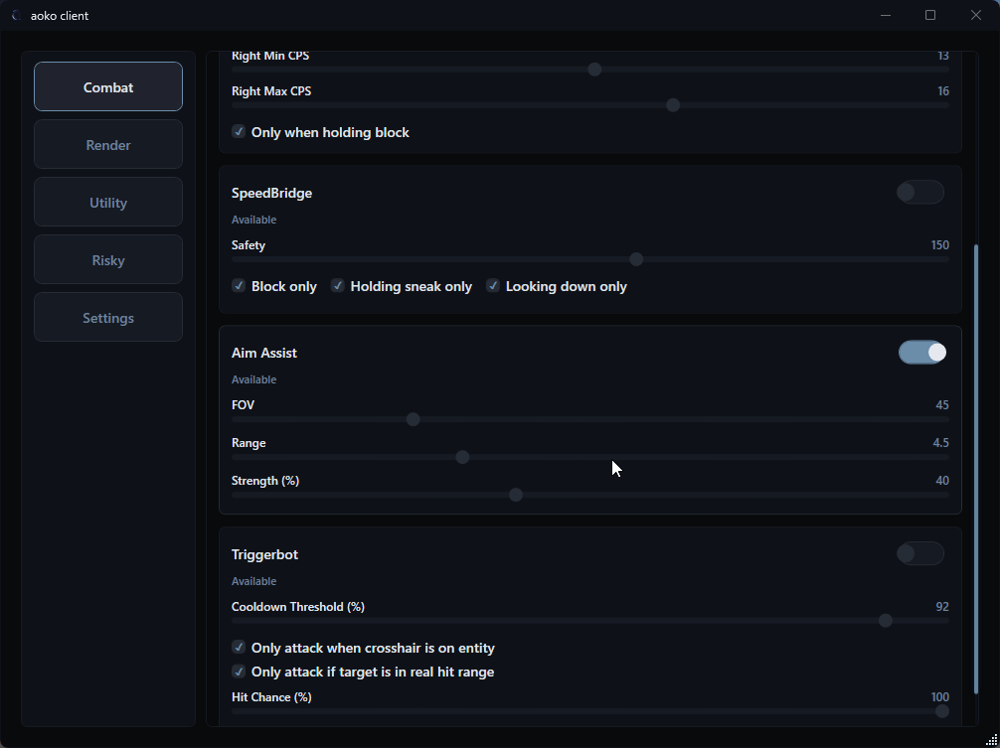

External control center for all supported versions.
Built for Lunar Client 1.8.9, 1.21.x, and 26.1.
Current modules and controls
%AppData%\LegoClicker\profiles\.Current gameplay and GUI previews



last checked:
All three versions are currently supported: 1.8.9, 1.21.x, and 26.1.
Loader and bridge overview
javaw.exe and injects the native bridge DLL.SwapBuffers.25590 between loader and bridge.Add these to Custom JVM Arguments in Lunar Client settings:
LegoClicker.exeOpen source build for Windows x64.
Build from source using the commands in README.